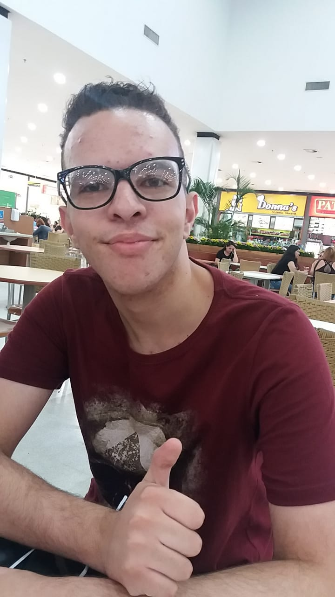
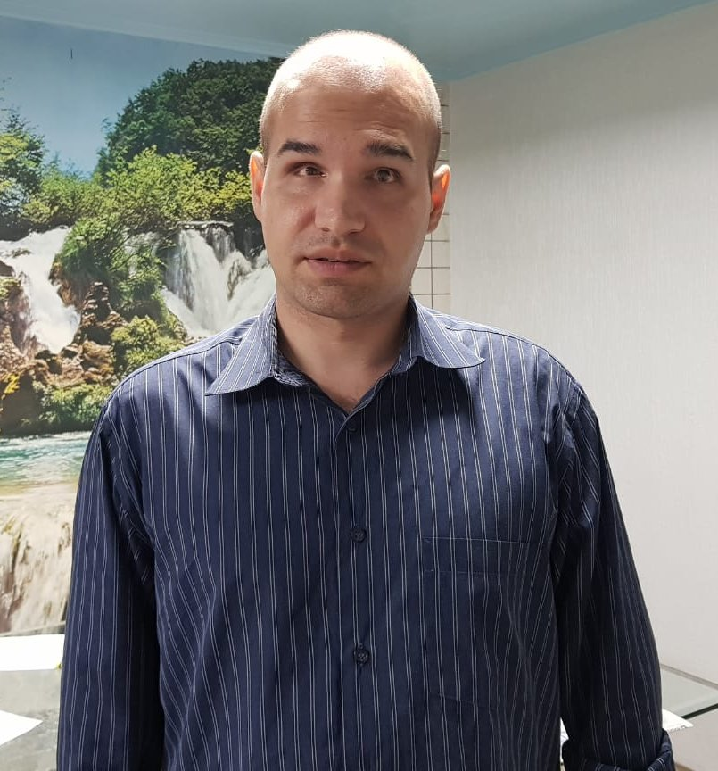

| Foto |
Resumo Profissional |
Linkedin |
|
Meu nome é Aliny Da Silva Marcelino e tenho 37 anos. Possuo graduação completa em Jornalismo que conclui em 2010. Sou formada também em Secretariado. Iniciei minha trajetória profissional trabalhando na área administrativa, posteriormente ainda na faculdade migrei para a área de comunicação e trabalhei alguns anos em duas emissoras de televisão por assinatura. A primeira emissora era voltada para o público de motorsport em que atuei como produtora e repórter viajando pelo Brasil cobrindo corridas de kart, Fórmula Truck, Fórmula Indy e Stock Car. Na segunda emissora o segmento era de turismo e atuei como produtora dos programas do Canal. Destaco em especial uma viagem que foi realizada para gravar um programa sobre cruzeiro. Coordenei a equipe de 4 pessoas em uma viagem de 25 dias no qual gravamos como funciona um cruzeiro e os principais pontos turísticos por onde o navio passou (Patagônia, Argentina, Uruguai, Usuhaia, Ilhas Falkland (Ilhas Malvinas), Punta Arenas, Puerto Montt e Chile). O trabalhado foi concluído com êxito e elogiado pelo meu gestor e demais membros da diretoria. Minha mais recente experiência profissional atuei na área administrativa no qual fiquei mais de 2 anos em uma Indústria Farmacêutica Multinacional. Lá tive contato direto com a área de TI e foi aí que me despertou o interesse por essa área que atualmente pretendo ingressar. Sou ligada em tecnologia e vejo que o futuro do mercado de trabalho que continua em crescente expansão é em Tecnologia e Engenharia da Informação. Sou bastante comunicativa tenho facilidade em aprender e também entendo que o trabalho em conjunto nessa área é fundamental para fazer as entregas. Percebo que apesar da oferta de vagas nesse setor a mão de obra é muito escassa por falta de qualificação, por esse motivo pretendo ingressar nessa área com a oportunidade oferecida e cada vez mais aperfeiçoar meus conhecimentos nessa nova carreira. |
Linkedin da Aliny |
 |
Iniciei minha carreira e formação em Ciência da Computação pela Universidade Paulista - UNIP cursando 2 anos, mas não pude concluir por problemas de saúde ocorridos em 2009. Em 2010 iniciei na formação em Design Gráfico no qual hoje sou formado desde 2012. Construí minha carreira na área de Design Gráfico e Técnico de Informática na área de manutenção de Computadores. Sou um profissional autodidata que busca sempre aprender e me aperfeiçoar em novas formas de desenvolver minha criatividade e meus métodos para prudução de meus projetos, e aplicar estes novos conhecimentos adquiridos, seja eles na área de informática ou mesmo na área de Design Gráfico. |
Linkedin de Erich |
|  |
Eu conheci a área de tecnologia e informática com 9 anos de idade, desde então eu acabei descobrindo o que eu queria fazer. Com 18 anos eu comecei a entrar na faculdade aprendendo Ciência da Computação na UNICID em 2019 com previsão de término em 2022, no mesmo ano eu acabei fazendo curso de Desenvolvedor de Web Design no SENAI no qual eu sou formado. Meu maior objetivo é aprimorar o meu conhecimento e me aperfeiçoar em novas formas de desenvolvimento na área da computação e produção de projetos. |
Linkedin de Eduardo |
|  |
Sou Tecnólogo em Análise e Desenvolvimento de Sistemas pela Unicesumar e medalhista de excelência na 8ª etapa nacional da Olimpíada do Conhecimento, representando o SENAI-MT na ocupação Tecnologia da Informação (PcDs). Possuo conhecimentos avançados no Microsoft Windows 10 e no pacote Microsoft Office 2016 (Word, Excel, Access e PowerPoint). Possuo conhecimentos em SEO, HTML5, CSS3, PHP, banco de dados MySQL, WordPress e CodeIgniter. Boa comunicação, bom relacionamento interpessoal, trabalho em equipe, comprometimento, iniciativa, organização e raciocínio lógico são algumas de minhas características. |
Linkedin de Jean Maronez |
|
Meu nome é Aliny Da Silva Marcelino e tenho 37 anos. Possou graduação completa em Jornalismo que conclui em 2010. Sou formada também em Secretariado. Iniciei minha trajetória profissional trabalhando na área administrativa, posteriormente ainda na faculdade migrei para a área de comunicação e trabalhei alguns anos em duas emissoras de televisão por assinatura. A primeira emissora era voltada para o público de motorsport em que atuei como produtora e repórter viajando pelo Brasil cobrindo corridas de kart, Fórmula Truck, Fórmula Indy e Stock Car. Na segunda emissora o segmento era de turismo e atuei como produtora dos programas do Canal. Destaco em especial uma viagem que foi realizada para gravar um programa sobre cruzeiro. Coordenei a equipe de 4 pessoas em uma viagem de 25 dias no qual gravamos como funciona um cruzeiro e os principais pontos turísticos por onde o navio passou (Patagônia, Argentina, Uruguai, Usuhaia, Ilhas Falkland (Ilhas Malvinas), Punta Arenas, Puerto Montt e Chile). O trabalhado foi concluído com êxito e elogiado pelo meu gestor e demais membros da diretoria. Minha mais recente experiência profissional atuei na área administrativa no qual fiquei mais de 2 anos em uma Indústria Farmacêutica Multinacional. Lá tive contato direto com a área de TI e foi aí que me despertou o interesse por essa área que atualmente pretendo ingressar. Sou ligada em tecnologia e vejo que o futuro do mercado de trabalho que continua em crescente expansão é em Tecnologia e Engenharia da Informação. Sou bastante comunicativa tenho facilidade em aprender e também entendo que o trabalho em conjunto nessa área é fundamental para fazer as entregas. Percebo que apesar da oferta de vagas nesse setor a mão de obra é muito escassa por falta de qualificação, por esse motivo pretendo ingressar nessa área com a oportunidade oferecida e cada vez mais aperfeiçoar meus conhecimentos nessa nova carreira. |
Linkedin da Aliny |